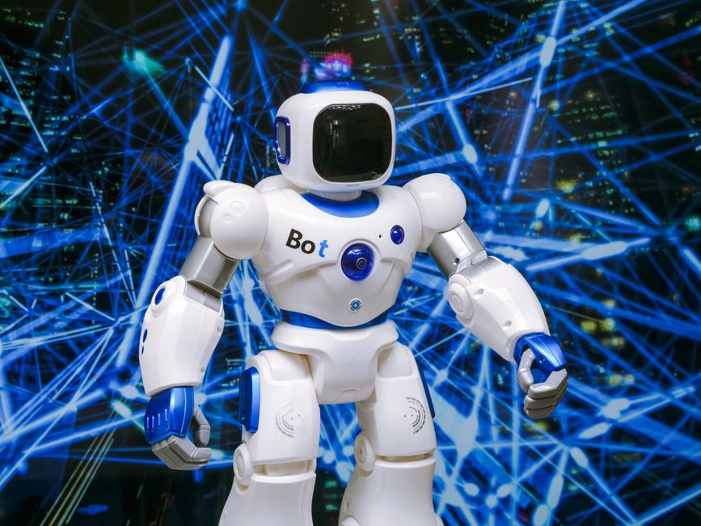

Imagine a robot that walks, runs, and interacts with the world just like us. For decades, this has been the stuff of science fiction, sparking our imaginations with tales of helpful companions and awe-inspiring machines. Today, this dream is rapidly transforming into reality, thanks to incredible advancements in robotics and Artificial Intelligence (AI). From the gravity-defying stunts of Boston Dynamics' Atlas to Tesla's ambitious Optimus, humanoid robots are no longer just a futuristic fantasy – they are becoming a tangible part of our present, poised to reshape our future. Let's dive into the fascinating world where bipedal machines meet intelligent algorithms, right here at MakerWorks!
What Exactly Are Humanoid Robots?
At its core, a humanoid robot is a robot designed to resemble the human body. This means they typically feature:
- Bipedal Locomotion: They walk on two legs, just like us. This is incredibly complex to achieve, requiring sophisticated balance and coordination.
- Torso and Head: A central body section often housing their processing units and sensors, topped with a head that might contain cameras (eyes) and microphones (ears).
- Arms and Hands: Equipped with manipulators designed to mimic human arms and hands, allowing them to grasp, lift, and interact with objects in human-centric environments.
The primary reason for building robots in a human-like form is their ability to operate in environments designed for humans. Think about it: our homes, offices, factories, and even public spaces are all built around human dimensions and capabilities. A humanoid robot, therefore, could theoretically navigate stairs, open doors, use tools, and perform tasks in these existing spaces without requiring massive infrastructure overhauls.
The Brain Behind the Brawn: AI's Indispensable Role
A humanoid robot without AI is just a complex puppet. It's AI that gives these machines the ability to "think," "perceive," "learn," and "act" intelligently. AI is the secret sauce that transforms a collection of motors and sensors into an autonomous entity.
How AI Powers Humanoids:
- Perception: AI enables robots to understand their surroundings.
- Computer Vision: Using cameras, AI algorithms can identify objects, recognize faces, estimate distances, and map out the environment, allowing the robot to "see."
- Speech Recognition: Microphones combined with AI allow robots to understand human commands and engage in basic conversations.
- Sensor Fusion: Combining data from various sensors (LIDAR, ultrasonic, tactile) to create a comprehensive understanding of the world.
- Cognition and Decision Making: This is where the robot "thinks."
- Machine Learning (ML): Robots can learn from data and experience. For instance, an ML model can be trained to recognize different objects or predict the best way to grasp an item.
- Deep Learning (DL): A subset of ML, DL powers more advanced perception and decision-making, especially in complex tasks like natural language processing and advanced image recognition.
- Planning and Navigation: AI helps robots plan optimal paths, avoid obstacles, and decide on the sequence of actions needed to complete a task.
- Action and Control: AI ensures smooth and effective movement.
- Motion Control: AI algorithms continuously adjust motor torques and joint angles to maintain balance, execute precise movements, and adapt to changing conditions (like walking on uneven ground).
- Reinforcement Learning: Robots can learn complex motor skills by trial and error, getting "rewards" for successful actions and "penalties" for failures, much like how humans learn new physical skills.
"AI is not just an add-on for humanoid robots; it is their operating system, their learning engine, and their interface to the human world. Without AI, humanoids would be static sculptures; with it, they become potential partners."
Giants in the Field: Boston Dynamics and Tesla Optimus
When we talk about groundbreaking humanoid robots, two names often come up:
Boston Dynamics: The Masters of Mobility
Boston Dynamics has captivated the world with videos of their robots performing incredible feats of agility and balance. Their most famous humanoid, Atlas, is a testament to advanced hydraulic systems and sophisticated control algorithms. Atlas can:
- Walk, run, and jump over obstacles.
- Perform parkour routines, including backflips and complex jumps.
- Carry and manipulate objects, even adapting to unexpected changes in its environment.
While Atlas is primarily a research platform showcasing the pinnacle of dynamic locomotion, Boston Dynamics also has quadruped robots like Spot that are already being deployed in various industries for inspection, monitoring, and dangerous tasks. Their work emphasizes robust, dynamic movement and resilience in challenging environments.
Tesla Optimus (now known as Bumblebot): A Vision for General Purpose AI
Tesla, known for its electric vehicles and AI-driven autonomous driving technology, entered the humanoid robot race with Optimus (later nicknamed Bumblebot). Tesla's approach is distinctly different from Boston Dynamics:
- Mass Production: The goal is to create a mass-producible, affordable humanoid robot that can perform repetitive, mundane, or dangerous tasks.
- Leveraging Existing AI: Optimus aims to utilize Tesla's extensive AI expertise, particularly its neural networks developed for Full Self-Driving (FSD), to enable the robot to understand and interact with the real world.
- Practical Applications: Tesla envisions Optimus working in factories, homes, and potentially even assisting with elder care.
While still in its early stages, Optimus represents a bold vision for a general-purpose humanoid robot that could become a common sight in our daily lives, much like how personal computers revolutionized information access.
Challenges and the Road Ahead
Despite the incredible progress, building truly intelligent and versatile humanoid robots presents significant challenges:
- Technical Hurdles:
- Battery Life: Powering complex movements and AI processing for extended periods remains a major constraint.
- Dexterity: Achieving human-level fine motor control and manipulation with robotic hands is incredibly difficult.
- Robust Locomotion: Navigating highly unstructured and unpredictable environments (like a crowded street or a cluttered home) is still a monumental task.
- Cost: High manufacturing costs currently limit widespread adoption.
- Ethical and Societal Concerns:
- Job Displacement: The potential impact on human employment is a significant concern.
- Safety: Ensuring robots can operate safely alongside humans without causing harm.
- Privacy: Robots equipped with cameras and microphones raise questions about data collection and privacy.
- Bias in AI: If AI systems are trained on biased data, the robots can exhibit discriminatory behaviors.
The future of humanoid robots is bright. We can anticipate them assisting in elder care, performing dangerous tasks in disaster zones, exploring distant planets, and even becoming companions. The journey is long, but the destination promises a world transformed.
Getting Started with Robotics & AI: Your Journey at MakerWorks!
Inspired by Atlas and Optimus? You don't need a multi-million dollar lab to start your journey into robotics and AI! Here's how you can begin right now:
- Learn to Code: Python is an excellent language for beginners and is widely used in robotics and AI. It's intuitive and powerful.
- Explore Microcontrollers: Platforms like Arduino and Raspberry Pi are fantastic for building your first robots. You can control motors, read sensor data, and bring your creations to life.
- Understand Basic AI Concepts: Start with simple "if-else" logic, then move to understanding how robots "perceive" their world through sensors.
- Build Simple Robots: Start with wheeled robots, then perhaps a simple robotic arm. Focus on understanding the mechanics and programming.
Here's a tiny Python snippet showing how a very basic AI might make a decision for a robot:
# Simple AI decision for a hypothetical robot
distance_to_obstacle = 50 # in cm
is_object_detected = True
battery_level = 75 # percentage
if distance_to_obstacle < 30 and is_object_detected:
print("Obstacle too close! Initiating evasive maneuver.")
elif battery_level < 20:
print("Battery low! Returning to charging station.")
elif is_object_detected:
print("Object detected. Approaching for inspection.")
else:
print("Path clear. Continuing patrol.")
This simple code demonstrates how a robot might use sensor inputs (distance, object detection, battery) to make a decision based on pre-programmed rules. As you advance, these rules become complex algorithms powered by Machine Learning!
Conclusion: Building Tomorrow, Today
Humanoid robots, empowered by cutting-edge AI, are no longer confined to the pages of science fiction. They are rapidly evolving from laboratory marvels to practical tools that promise to revolutionize industries, assist in daily life, and push the boundaries of human capability. From the breathtaking athleticism of Boston Dynamics' creations to Tesla's vision of a general-purpose robot for every home, the future of human-robot interaction is here.
At MakerWorks, we believe that the next generation of innovators will be the ones to shape this future. Are you ready to be part of it? Join our workshops, explore our courses, and start building your own robots today. The journey into robotics and AI is an exciting one, full of learning, discovery, and endless possibilities. Let's build the future, one robot at a time!